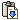

Toolbar
The application toolbar contains the following tools:
- Open Site
- Launches the Open Site dialog.
- Open Resource
- Launches the Browse Resource dialog to open a resource for editing.
- Save
- Saves the current open resource.
- Save All
- Saves all open and modified resources
- Cut
- Cuts the current resource in the site explorer. The resource is not actually cut until it is pasted.
- Copy
- Copies the current resource in the site explorer. The resource is not actually copied until it is pasted.
-  Paste
- Pastes a previously cut or copied resource into the repository.
- Refresh
- Refreshes all visible branches of the site explorer.
- Help
- Launches the embedded help system.